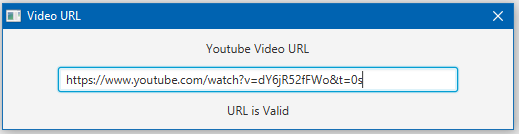
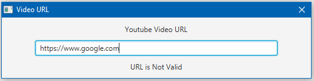
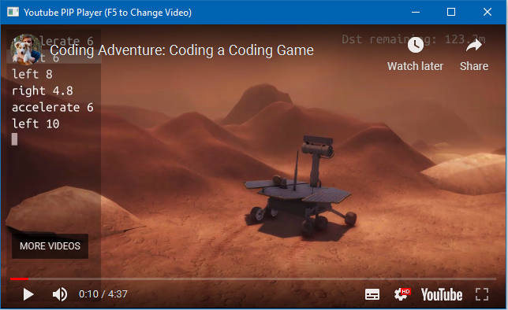

Home | Browse Projects | Contact Me
“Play In Picture” Player
Overview
The PIP Player rather “Play In Picture” Player is a Java application designed to combat the issue of small screen real estate. THe player is designed to take in a youtube video link and then displays it in a dedicated window. The advantage of this is that the window is coded to always render on top of the windows behind it. This means that a user can have say a programming tutorial loaded up at the same time as using an IDE in fullscreen mode.
Media & Screenshots
Here is a video of the player being used to load up a programming video, overlaying the Netbeans IDE.
Taking the users valid youtube link as an input.
Rejecting an invalid youtube link.
Displaying the associated video in a WebView container.
Download
If you would like to browse the project source code for yourself you can download the project from the link below.
PIP Player Repository